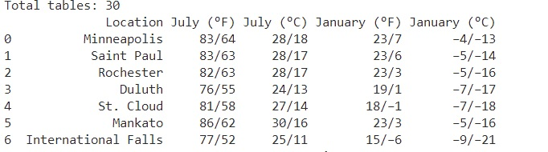

https://www.seobility.net/es/wiki/API_REST
https://www.seobility.net/es/wiki/API_RESTPIP PACKAGE
APIs
¿"Quién" es el "Postman"?
Code and Next Steps
Pip es el acrónimo de "PIP Installs Packages", que es una herramienta que permite instalar y desinstalar paquetes de Pyython. Además las posibles dependencias que estos paquetes tengan las resuelve automáticamente.
Podemos decir que los paquetes de python, aunque no todos, residen en lo que también es llamado "the cheese shop" o "Python Package Index". Por lo tanto, para ejecutarlos, es necesario llamarlos haciendo uso de Pip.
Pip normalmente viene incluido en las últimas versiones de python. Para comprobar que lo tenemos en la terminal escribimos:
´´´ pip --version ´´´ y si nos devuelve la versión y el lugar de instalación es que estará instalado.
En caso de no estar instalado, hay que seguir los siguientes pasos en windows:
Accederíamos por la terminal de comandos y mediante la siguiente instrucción, instalaríamos, por ejemplo el paquete "requests".
pip install requests
Podemos importarlos enteros o podemos importar las funciones que nos interesan de esos paquetes. Y ya en Python, mediante los siguientes comandos hacemos la importación de:
import requests
import requests as rq
from bs4 import BeautifulSoup
También podríamos llamar a un fichero python donde almacenamos variables en nuestro sistema. Imaginemos que tenemos un fichero llamado "cooking_functions.py" donde almacenamos una variable llamada "boiling_point", que recoge el argumento de la comida que vayas a preparar.
Para ello usaremos este código:
from cooking_functions import boiling_point
y una vez importado podremos llamarlo desde nuestro código. También podremos importar el paquete interno entero como haríamos con un externo.
Si queremos llamar a una función tras importar el paquete entero:
paguete.funcion()
Si queremos llamar a una función tras importar el paquete entero CON ALIAS:
alias.funcion()
Si queremos llamar a una función tras Importar una función del paquete:
funcion()
!!! -- En defintiva, pip nos permite acceder a funcionalidad que ya están programadas por otros y hacer más potentes nuestros programas sin necesidad de volverlo a reprogramar.
API es el acrónimo para "Application Programming Interface". Las API son mecanismos que permiten a dos componentes de software comunicarse entre sí mediante un conjunto de definiciones y protocolos.
Analicemos que significa cada palabra en el contexto de las APIs:
La palabra aplicación se refiere a cualquier software diseñado para satisfacer las necesidaes de los usuarios finales. Es decir, las aplicaciones son programas informáticos que permiten a los usuarios realizar tareas específicas, como procesamiento de texto, edición de imágenes, gestión de proyectos, navegación web, entre otros.
La palabra programming, a pesar de poder ser confundidas con la aplicación, los programas pueden incluir aplicaciones y otros tipos de software, como sistemas operativos, controladores de dispositivos, utilidades y más.
La palabra interfaz puede considerarse como un contrato de servicio entre dos aplicaciones. Este contrato define cómo se comunican entre sí mediante solicitudes y respuestas.
La documentación de las APIs suele contener información sobre cómo los desarrolladores deben estructurar esas solicitudes y respuestas.
La arquitectura de las API suele explicarse en términos de cliente y servidor. La aplicación que envía la solicitud se llama cliente, y la que envía la respuesta se llama servidor.
https://www.seobility.net/es/wiki/API_REST
Las API pueden funcionar de cuatro maneras diferentes:
La API de SOAP (Simple Object Access Protocol) utilizan el protocolo simple de acceso a objetos. El cliente y el servidor intercambian mensajes mediante XML(Lenguaje de Marcado Extensible) para intercambiar información entre diferentes sistemas.
Las API de RPC (Remote Procedure Call) permiten que una aplicación invoque una función o método en un sistema remoto a través de una red. El cliente completa una función (o procedimiento) en el servidor, y el servidor devuelve el resultado al cliente.
La API de WebSocket es un protocolo de comunicación bidireccional que permite que los datos se intercambien entre una aplicación web y un servidor en tiempo real. Utiliza objetos JSON para transmitir datos
La API de REST es una forma de permitir que diferentes aplicaciones se comuniquen entre sí a través de internet utilizando el protocolo HTTP. Estas son las API más populares y flexibles que se encuentran en la web actualmente.
Los verbos Http involucrados en un sistema REST son GET, POST, PUT y DELETE.
Método HTTP se refiere a la acción que se debe realizar en una solicitud HTTP, como obtener información, enviar información, actualizar información o eliminar información.
Los métodos HTTP más comunes utilizados en las API son:
Para obtener información del servidor. Esta solicitud no cambia nada en el servidor ya que solo consulta los datos, no los altera en el servidor y por lo tanto se considera una operación "segura".
Para Agregar información al servidor. Esta solicitud puede crear o modificar datos en el servidor y no es considerada una operación "segura".
Para reemplazar la información del servidor. Esta solicitud puede crear nuevos datos si no existen y también puede modificar datos existentes. Es considerada una operación "no segura".
Para borrar información del servidor. Esta solicitud es considerada una operación "no segura" ya que elimina información del servidor.
Estos métodos no son los únicos pero sí los principales más utilizados, también hay otros métodos HTTP menos comunes como HEAD, OPTIONS, CONNECT, TRACE y PATCH que se utilizan en casos específicos.
Vamos a recoger una tabla de una página web haciendo uso de la libreria "pandas": Es cierto que "pandas" tiene otras dependencias que también tendremos que instalar como "lxml" y "html5lib "
import pandas as pd
table_mn = pd.read_html('https://en.wikipedia.org/wiki/Minnesota')
print(f'Total tables: {len(table_mn)}')
if len(table_MN)>2:
table_3 = table_mn[2]
print(table_3)
Y esto nos va a devolver el contenido de la tercera tabla de esa página web que es el siguiente:

Pasos
Con el código generado en el tema anterior "CH06_01_classes", en concreto vaos a coger el fichero "datawarehouse.py" y lo vamos a copiar en otra nueva carpeta que podéis llamar como queráis.
Cuando tengáis ese fichero, lo que tenéis que hacer es copiarlo una vez y la copia llamarla "datawarehouse_exe.py.
Ahora tenemos dos ficheros:
Dejad todas las clases en el fichero "datawarehouse.py".
En "datawarehouse_exe.py" vamos a dejar el resto del código que no son clases. Y además, aquí vamos a añadir al principio del fichero la siguiente instrucción:
import datawarehouse as dw
y en el resto del fichero, todas las clases que aparecen nombras deberán ir ahora precedidas de "dw." para que idenifique cada clase que pertenece a ese paquete que acabamos de importar.
Obtendremos los código de la carpeta "CH06_02_pipapi" en los dos ficheros contenidos en ella.
Mr. Postman es una aplicación que funciona indistintamente en Windows, Mac y Linux que básicamente nos permite realizar peticiones de una manera simple para testear APIs de tipo REST propias o de terceros.
Postman sirve para múltiples tareas, entre otras:
Postman cuenta con una serie de métodos que nos permiten tomar acción ante nuestras peticiones. Los más utilizados:
Os recordarán a los verbos de las APIs, no? Al fin y al cabo es lo que utiliza Postman, los verbos de las APIs, es decir de de los métodos HTTP.
En cuanto a los posibles errores que podemos apreciar en la respuesta que nos ofrece la herramienta, lo resumiremos en que
!!! -- En defintiva, "Mr. Postan" es mejor que un cartero, que un guarda de seguridad y que un secretario, ya que es todo eso a la vez, porque: !!! - Recoge nuestras peticiones y se asegura de que todo es seguro y las realiza. !!! - Se va has el servidor, ejecuta nuestra petición manteniendo la seguridad y el orden en todo momento. !!! - Y nos devuelve lo que ha obtenido.
Obtendremos los código de la carpeta "CH06_02_pipapi" en los dos ficheros contenidos en ella.